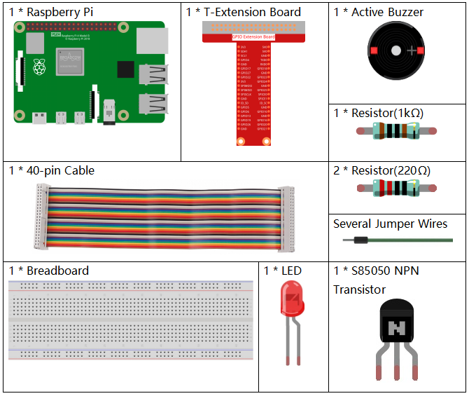

3.1.11 Morsekode-Generator¶
Einführung¶
In dieser Lektion erstellen wir einen Morsekode-Generator, in den Sie eine Reihe englischer Buchstaben in den Raspberry Pi eingeben, damit er als Morsekode angezeigt wird.
Komponenten¶
Schematische Darstellung¶
T-Karte Name |
physisch |
wiringPi |
BCM |
GPIO17 |
Pin 11 |
0 |
17 |
GPIO22 |
Pin 15 |
3 |
22 |

Experimentelle Verfahren¶
Schritt 1: Bauen Sie die Schaltung auf. (Achten Sie auf die Pole des Summers: Der mit dem + Etikett ist der positive Pol und der andere der negative.)

Für Benutzer in C-Sprache¶
Schritt 2: Öffnen Sie die Kodedatei.
cd /home/pi/davinci-kit-for-raspberry-pi/c/3.1.11/
Schritt 3: Kompilieren Sie den Kode.
gcc 3.1.11_MorseCodeGenerator.c -lwiringPi
Schritt 4: Führen Sie die obige ausführbare Datei aus.
sudo ./a.out
Geben Sie nach dem Ausführen des Programms eine Reihe von Zeichen ein, und der Summer und die LED senden die entsprechenden Morsekodesignale.
Kode Erklärung
struct MORSE{
char word;
unsigned char *code;
};
struct MORSE morseDict[]=
{
{'A',"01"}, {'B',"1000"}, {'C',"1010"}, {'D',"100"}, {'E',"0"},
{'F',"0010"}, {'G',"110"}, {'H',"0000"}, {'I',"00"}, {'J',"0111"},
{'K',"101"}, {'L',"0100"}, {'M',"11"}, {'N',"10"}, {'O',"111"},
{'P',"0110"}, {'Q',"1101"}, {'R',"010"}, {'S',"000"}, {'T',"1"},
{'U',"001"}, {'V',"0001"}, {'W',"011"}, {'X',"1001"}, {'Y',"1011"},
{'Z',"1100"},{'1',"01111"}, {'2',"00111"}, {'3',"00011"}, {'4',"00001"},
{'5',"00000"},{'6',"10000"}, {'7',"11000"}, {'8',"11100"}, {'9',"11110"},
{'0',"11111"},{'?',"001100"}, {'/',"10010"}, {',',"110011"}, {'.',"010101"},
{';',"101010"},{'!',"101011"}, {'@',"011010"}, {':',"111000"}
};
Diese Struktur MORSE ist das Wörterbuch des Morsecodes, das die Zeichen AZ, die Nummer 0-9 und die Markierungen „?“ Enthält. “/” “:” “,” “.” “;” “!” “@” .
char *lookup(char key,struct MORSE *dict,int length)
{
for (int i=0;i<length;i++)
{
if(dict[i].word==key){
return dict[i].code;
}
}
}
Die Funktion lookup() funktioniert durch „Überprüfen des Wörterbuchs“. Definieren Sie einen Schlüssel, suchen Sie die gleichen Wörter wie den Schlüssel in der Struktur morseDict und geben Sie die entsprechenden Informationen zurück - “kode” des bestimmten Wortes.
void on(){
digitalWrite(ALedPin,HIGH);
digitalWrite(BeepPin,HIGH);
}
Erstellen Sie eine Funktion auf(), um den Summer und die LED zu starten.
void off(){
digitalWrite(ALedPin,LOW);
digitalWrite(BeepPin,LOW);
}
Die Funktion off () schaltet den Summer und die LED aus.
void beep(int dt){
on();
delay(dt);
off();
delay(dt);
}
Definieren Sie einen Funktionston (), damit der Summer und die LED in einem bestimmten Intervall von dt ertönen und blinken.
void morsecode(char *code){
int pause = 250;
char *point = NULL;
int length = sizeof(morseDict)/sizeof(morseDict[0]);
for (int i=0;i<strlen(code);i++)
{
point=lookup(code[i],morseDict,length);
for (int j=0;j<strlen(point);j++){
if (point[j]=='0')
{
beep(pause/2);
}else if(point[j]=='1')
{
beep(pause);
}
delay(pause);
}
}
}
Die Funktion morsecode() wird verwendet, um den Morsecode von Eingabezeichen zu verarbeiten, indem die „1“ der Kode weiterhin Töne oder Lichter aussendet und die „0“ in Kürze Töne oder Lichter aussendet, z. B. „SOS“ eingibt und dort wird ein Signal sein, das drei kurze, drei lange und dann drei kurze Segmente „· · · - - - · · ·“ enthält.
int toupper(int c)
{
if ((c >= 'a') && (c <= 'z'))
return c + ('A' - 'a');
return c;
}
char *strupr(char *str)
{
char *orign=str;
for (; *str!='\0'; str++)
*str = toupper(*str);
return orign;
}
Vor dem Codieren müssen Sie die Buchstaben in Großbuchstaben vereinheitlichen.
void main(){
setup();
char *code;
int length=8;
code = (char*)malloc(sizeof(char)*length);
while (1){
printf("Please input the messenger:");
scanf("%s",code);
code=strupr(code);
printf("%s\n",code);
morsecode(code);
}
}
Wenn Sie die relevanten Zeichen mit der Tastatur eingeben, konvertiert code = strupr (code) die Eingabebuchstaben in ihre Großbuchstaben.
Printf() druckt dann den Klartext auf dem Computerbildschirm, und die Funktion morsecod() bewirkt, dass der Summer und die LED Morsecode ausgeben.
Beachten Sie, die Länge des Eingabezeichens darf die Länge nicht überschreiten(kann überarbeitet werden).
Für Python-Sprachbenutzer¶
Schritt 2: Öffnen Sie die Kodedatei.
cd /home/pi/davinci-kit-for-raspberry-pi/python
Schritt 3: Ausführen.
sudo python3 3.1.11_MorseCodeGenerator.py
Geben Sie nach dem Ausführen des Programms eine Reihe von Zeichen ein, und der Summer und die LED senden die entsprechenden Morsekodesignale.
Kode Erklärung
MORSECODE = {
'A':'01', 'B':'1000', 'C':'1010', 'D':'100', 'E':'0', 'F':'0010', 'G':'110',
'H':'0000', 'I':'00', 'J':'0111', 'K':'101', 'L':'0100', 'M':'11', 'N':'10',
'O':'111', 'P':'0110', 'Q':'1101', 'R':'010', 'S':'000', 'T':'1',
'U':'001', 'V':'0001', 'W':'011', 'X':'1001', 'Y':'1011', 'Z':'1100',
'1':'01111', '2':'00111', '3':'00011', '4':'00001', '5':'00000',
'6':'10000', '7':'11000', '8':'11100', '9':'11110', '0':'11111',
'?':'001100', '/':'10010', ',':'110011', '.':'010101', ';':'101010',
'!':'101011', '@':'011010', ':':'111000',
}
Diese Struktur MORSE ist das Wörterbuch des Morsecodes, das die Zeichen AZ, die Nummer 0-9 und die Markierungen „?“ Enthält. “/” “:” “,” “.” “;” “!” “@” .
def on():
GPIO.output(BeepPin, 1)
GPIO.output(ALedPin, 1)
Die Funktion on() startet den Summer und die LED.
def off():
GPIO.output(BeepPin, 0)
GPIO.output(ALedPin, 0)
Mit der Funktion off () werden der Summer und die LED ausgeschaltet.
def beep(dt): # x for dalay time.
on()
time.sleep(dt)
off()
time.sleep(dt)
Definieren Sie einen Funktionston (), damit der Summer und die LED in einem bestimmten Intervall von dt ertönen und blinken.
def morsecode(code):
pause = 0.25
for letter in code:
for tap in MORSECODE[letter]:
if tap == '0':
beep(pause/2)
if tap == '1':
beep(pause)
time.sleep(pause)
Die Funktion morsecode() wird verwendet, um den Morsecode von Eingabezeichen zu verarbeiten, indem die „1“ der Kode weiterhin Töne oder Lichter aussendet und die „0“ in Kürze Töne oder Lichter aussendet, z. B. „SOS“ eingibt und dort wird ein Signal sein, das drei kurze, drei lange und dann drei kurze Segmente „· · · - - - · · ·“ enthält.
def main():
while True:
code=input("Please input the messenger:")
code = code.upper()
print(code)
morsecode(code)
Wenn Sie die relevanten Zeichen mit der Tastatur eingeben, konvertiert Upper() die Eingabebuchstaben in ihre Großbuchstaben.
Printf() druckt dann den Klartext auf dem Computerbildschirm, und die Funktion morsecod() bewirkt, dass der Summer und die LED Morsecode ausgeben.